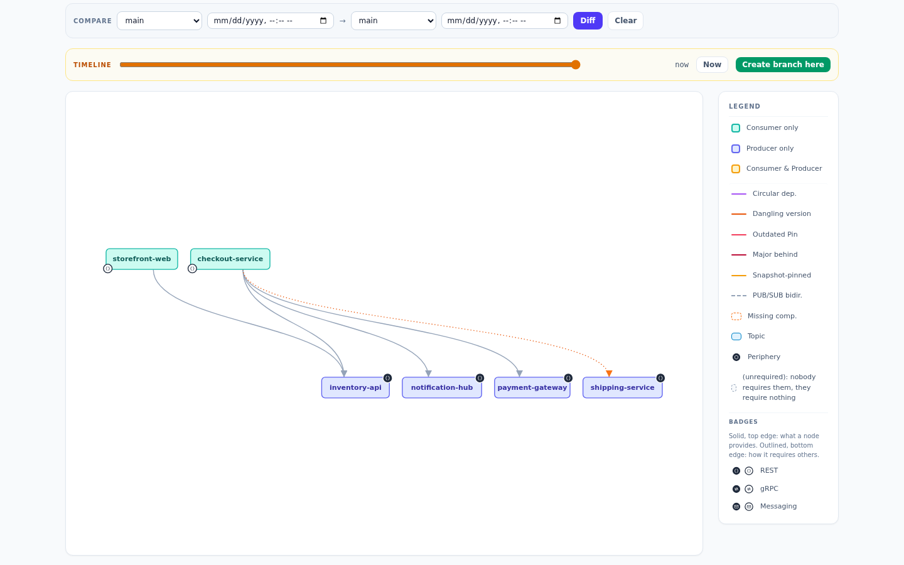

The dev graph is everything any build ever recorded. To know what production is, a build declares its stream: trunk builds maintain the main graph, and a releaser cuts named copies of it, sanshain-branches, that hotfix builds keep up to date.
Every provide, require and bundle may carry one stream marker; the catalog push takes only
trunk:
dependency_max_age_days (default 30).
trunk: true (trunk=true on a GET): this build is your
default-branch CI. A trunk provide stamps the version as
trunk's current version, shown as a badge on the
Producer page; a trunk require records the pin in the append-only trunk store, last write per
endpoint wins, which is what the main graph reads. Re-running an unchanged trunk build is
exactly what keeps trunk fresh.
tag: "<branch>": this build belongs to the named sanshain-branch, a release pipeline or a hotfix. The call
updates that branch's graph instead of trunk.
Streams never change version rules or what a require is answered; they decide which graph records
the call. A GA backport provided from a release branch without trunk is a normal GA
version that trunk does not claim.
The graph never fails a build. An unknown tag, or
trunk and tag together, still succeeds: the spec is stored and served,
the dev graph records the activity, trunk and every branch stay untouched, and the response
carries a Sanshain-Warning
header:
Sanshain-Warning: no sanshain-branch 'release-maribu' - this build was not recorded in a release graph
Sanshain-Warning: trunk and tag are mutually exclusive - this build was recorded in neither
Branches are never auto-created, so a typo cannot mint a half-empty release graph; it surfaces as
a printed warning, and as a failed build in
strict mode. A
retire keeps its own rule: trunk or
tag alongside retired: true is a 400.
A Producer that was quietly scrapped, or a Consumer that keeps a require it no longer uses, is a
forgotten thing, and the main graph's job is to show that rather than present stale data as
current. Trunk provides and requires carry a last-seen timestamp with their own
TTL, trunk_max_age_days (default 90,
independent of the dev window). Entries past half the TTL are highlighted as stale in the main
view (the amber dashed edge); past the TTL they leave the current main graph. They stay in
history: the TTL closes an entry, it never deletes it.
Trunk and branch writes are append-only: "last write wins" is how the current graph is read, not how it is stored. So the main graph and every branch can be rendered as they were at any past instant, which the timeline slider on the graph page does; its markers are the instants the graph changed. History is unbounded by default and is only ever read.
A release cut is a copy of the main graph, or of another branch, at a chosen instant. It needs the releaser role; the admin page, the graph page's Create branch here on the timeline, or the release pipeline does it:
Request
curl -X POST $SANSHAIN/admin/branches \
-H "Authorization: Bearer $SESSION" -H "Content-Type: application/json" \
-d '{"name": "release-maribou"}'
# optional: "source": "<another branch>", "as_of": "2026-10-01T00:00:00Z"
source defaults to trunk, as_of to now. A past as_of is a
first-class path: releases are cut from protected branches and carry no code drift, so
trunk-at-cut-date is the release whenever someone gets around to naming it. The branch is complete
by construction, because the main graph holds every service regardless of recent build activity,
and it takes the periphery trunk had at that instant.
Names are unique among live branches; main, dev and
trunk are reserved, because the first two name the built-in views and the third is
the stream a trunk build records. Renaming and deleting a branch are administrative acts: a rename
keeps membership, timeline and audit history (a pipeline still sending the old name gets the
warning above until it is reconfigured); a delete frees the name.
The /admin/branches routes are session-authenticated, so a pipeline cuts a branch
with a session token from POST /auth/login; an API token is refused there. Every
other call of a release pipeline (the tagged provides and requires) uses the API token as usual.
A version row shows chips naming every branch that references the version, next to the trunk badge:
Branches reference versions by value, never by row id. Deleting a version leaves a visibly
dangling reference in every branch that pins it (the orange dotted edge), and a later re-provide
of that number heals it. Deleting a Producer or Consumer that a branch's recorded graph references
is refused with 409 naming the branches, so a release cut that already happened is
never silently rewritten.

?scope=<branch>[@instant] on /report,
/report/markdown and /report/isolation, and the scope selector on the
reports page. dev has no timeline, so dev@instant is refused.
scope and at on
list_services, describe_service and get_graph (MCP).
Trunk CI sets SANSHAIN_TRUNK=true (or the client's --trunk,
-Dsanshain.trunk=true); release and hotfix pipelines set
SANSHAIN_TAG=<branch>. Nightly re-runs of an unchanged trunk build are wanted.
The CI integration chapter has the
pipeline shapes.
Checked against v2.6.0.